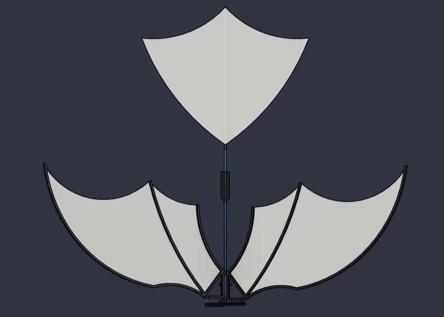
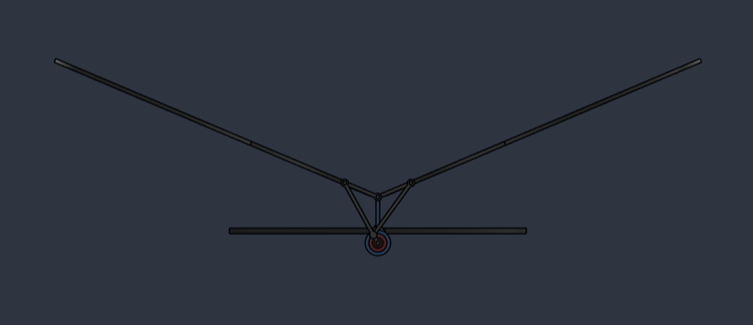

Overview
An ornithopter flies by flapping its wings like a bird. I built one in Fusion 360. The model has 12 parts. It has a frame, a shaft, a crank, two links, two wing roots, two wings, and a tail.
How it moves
The crank turns on the shaft at the front. One pin on the crank drives two links. Each link pushes a wing root. The wing root turns on a hinge at the top of the frame. So when the crank goes round, both wings go up and down together.
I built the left wing first. Then I mirrored it to make the right wing. I used revolute joints where parts need to rotate. I used rigid joints where parts must stay fixed. The motion in the viewer is computed from the crank radius, the link length, and the hinge position measured in the model. It is the same four bar linkage drawn on the right.
What I learned
- A small change in link length changes the whole wing path.
- Mirroring an assembly is not the same as copying it. The joints must be mirrored too.
- One crank pin driving two links keeps both wings in step with no gears.
Gallery
Views rendered in Fusion 360 and the motion study video.


